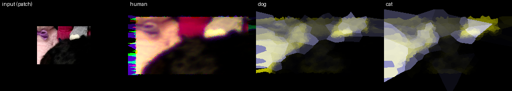

Scene input mode: reflectance_under_d65
Species: human, dog, cat
Patch geometry: full scene 14.25 x 10.35 deg, simulated patch 2.00 x 1.45 deg.
Cropping applied: yes
Native input patch: 107 x 77 px
Activation render grid: 256 x 184 px

Scene input mode: reflectance_under_d65
Species: human, dog, cat
Patch geometry: full scene 14.25 x 10.35 deg, simulated patch 2.00 x 1.45 deg.
Cropping applied: yes
Native input patch: 107 x 77 px
Activation render grid: 256 x 184 px
This standalone report walks through the modeled stage story for this species.
This standalone report walks through the modeled stage story for this species.
This standalone report walks through the modeled stage story for this species.
The comparison strip remains an overview. The primary experience is the per-species report set above.

| Species | Stimulated receptors | Stimulated fraction | Mean response | Left/right discriminability | Center contrast | Periphery contrast | Species report | Diagnostics |
|---|---|---|---|---|---|---|---|---|
| human | 134328.0000 | 0.7026 | 0.1682 | 0.1607 | 0.8645 | 0.9383 | report | summary |
| dog | 102744.0000 | 0.7100 | 0.2510 | 0.1596 | 0.8142 | 0.9127 | report | summary |
| cat | 136928.0000 | 0.7142 | 0.2489 | 0.2101 | 0.7782 | 0.9306 | report | summary |
The diagnostics directory remains the machine-readable family. The per-species pages turn those same stages into a user-facing walkthrough.